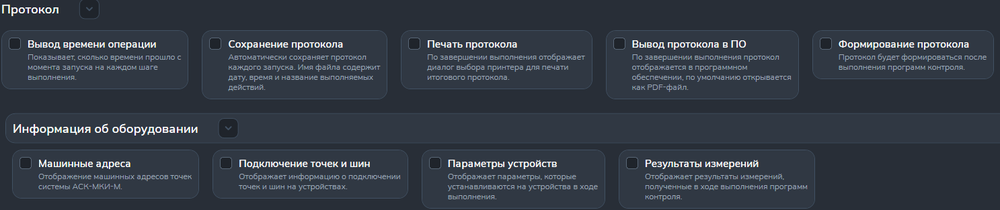

Раздел "Протокол"
Раздел предназначен для настройки работы протокола.
На рисунке 1 показано содержание раздела.

Отображение данных в протоколе
- Опция "Вывод времени операции" требует выводить в конце каждого сообщения время выдачи этого сообщения. Время измеряется в секундах. Отсчет времени начинается с момента начала выполнения ПК или теста.
- Опция "Машинные адреса" выводит машинные адреса точек системы.
- Опция "Подключение точек к шинам" выводит информацию о подключении/отключении точек от шин в системе.
- Опция "Параметры устройства" выводит информацию об устройства, связанных с системой (сообщение об подключении, отключении, ошибке и т.п.).
- Опция "Результаты измерения" выводит подробную информацию об измерениях во время выполнения ПК.
Дополнительные функции протокола
-
Опция "Сохранение протокола" автоматически сохраняет протокол
каждого запуска в текстовом документе.
Имя файла формируется от обозначения программы контроля (ОПК) и времени выполнения ПК (вплоть до секунд).
Файл сохраняется по пути "D:\AskMkiM\History". - Опция "Печать протокола" по завершению выполнения ПК предложит распечатать результат.
-
Опция "Выполнение протокола в ПО" автоматически сохраняет протокол
каждого запуска в PDF-файле.
Имя файла формируется от обозначения программы контроля (ОПК) и времени выполнения ПК (вплоть до секунд).
Файл сохраняется по пути "D:\AskMkiM\History". - Опция "Формирование протокола" сформирует весь протокол после завершения ПК.